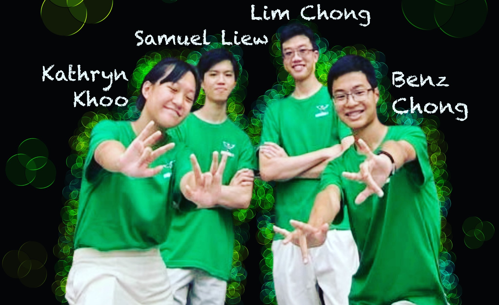

Who are we?
Team Clover comprises of...
😎Benz | 😁Samuel | 😍Kathryn | 🥳Lim Chong
Four individuals dedicated to serving YOU🫵, the student body!
Click for free entertainment!
Hello 👋, I am Benz Chong 😎 from 23S6H and I’m running for the 50th HCSC 🔥!
My CCA is Infocomm , and I have a passion for programming 🖥️🤩. I love to code a variety of applications -
including the website that you're currently reading!
Want someone who is observant 👀 and always on the lookout for ways to make things work better? That's me!
My most recent idea was to create a website to consolidate school-related links for my class.
👉Link👈
I believe joining the HCSC will be an enabling platform for me to serve the student body at large.
Want someone who is hardworking 🔨 and will work tirelessly towards getting things done?
You can be sure that I will be the one to see things through to infinity and beyond.
Want someone who is caring ❤️ and helpful and always puts the needs of his peers first?
You can count on me to get your voices heard! 📢📢
Should I be voted into the HCSC, I promise to put my skills into working for the betterment of the student body. 🫡 Please vote for me! Thank you!! 🙏
Darrin Tan @tan.darrin
if you're looking for a candidate who will put in the extra MILEAGE to make a difference, look no further than @clip.beanz 😎. with his TIREless 🛞 work ethic and ENGINEious 🚒 ideas, he is the perfect candidate to represent the student body. but benz is not just hardworking — he is also incredibly CARing 🚘, always putting the needs of his peers first. and with his unwavering commitment to making the school a better place, you can be sure that he will DRIVE 🙋♂️ progress and positive change. if you want a leader who will go above and beyond for you, vote for benz! 🙏
Delaine Ng @ning_ning_del_del
VOTE FOR @clip.beanz BENZZZ!! 👏👏 i’m sure he’ll make a great leader as he’s really organised, and not only in his own life, he’s capable of organising the structure of his team too!! he made a website for his class to refer to for their lessons and school life (in general). i found it really impressive that he was able to do that and if YOU vote for BENZ, he will ensure the council runs super smoothly and productively! VOTE BENZ!! 👏👏
Hey guys! I'm Samuel from 23S6H and am running for the 50th HCSC! Here's a short summary about myself! 🤩🤩🤩
My cca is string ensemble, and i play the violin! 🎻 I have a passion for music, so in my free time, I enjoy playing the piano and violin! Oftentimes, I also challenge myself to play tricky excerpts from various pieces, but usually fail 😬😬
I also enjoy watching F1! 🏎🏎 I really like the adrenaline that comes from the racing and it is really exciting to see the different drivers battle against each other in pursuit of victory!
Hobbies aside, I think I am a friendly person, and I try to bring joy to those around me! 🤤 I also believe that I am hard-working, so if I do get voted into HCSC, I promise to give my all for the good of the school and you, the student body!
Jonas Lin @leyu.linn
samuel is so real and legitimate. i voice call with samuel every day, and his presence makes me extremely productive. his rizz is immaculate. he is immaculate. a perfect person, he will also always listen to your troubles. he is also extremely talented at violin. i love samuel liew rud. hes so real i cannot even imagine how real he is he is so realistic
Joshua Poon @celestia_jpoon
samuel is such an absolutely glorious and spectacularly lipsmacking individual. Every single day i wake up thinking about samuel, and going to sleep thinking about samuel. His absolutely beautiful body, his cute cheeky smile, and the way he talks makes my heart go wild. The way he cares so much about the people around him and about the places he exists in makes me think he is just so amazing. @leyu.linn im the bigger samuel supporter than you suck it
HEY HWA CHONG
I am kathryn khooL from 23s6a and i am running to be a part of YOUR student council 🍀🍀
here’s my short yet exciting journey to get to where i am right now:
i was born on 5 september to a very funky family together with my twin sister kara
i spent 7 years in methodist girls primary and secondary school where i made many unforgettable memories 😢
i was in og 21 with whom i had an unforgettable orientation. my og mates were the ones who first introduced me to hwa chong’s vibrant colourful culture, which definitely inspired me to run for council!!🔥
currently, i am in 23s6a with probably the best classmates i could ever ask for 🫶🫶
now, why would i ever want to run for council? that’s cause i want to take part in shaping our batch’s next two years in hwa chong. these are going to be long-lasting memories which i would love to play a part in organising.
truth be told, JC life is very short, which is why i want to make the most out of my time here by joining the 50th hwa chong student council. i hope to serve and guide YOU to make the most of these two years at hwa chong.
Kara Khoo @khookara
kathryn should be voted in to student council as she is gifted in making quick and effective decisions (such as paying me to write this testimonial) with such foresight, kathryn is one that stands out among the crowd and she should be your pick for the 50th student council
Website - Benz Chong 23S6H
Background image - DealFuel